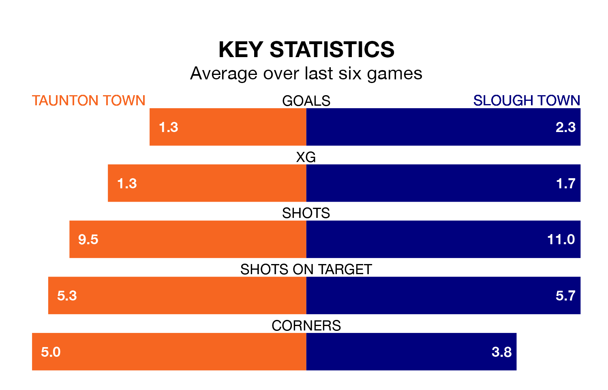

Slough Town are strong favourites to take all three points despite Taunton Town's home advantage in Tuesday's late match at the Cygnet Health Care Stadium.
*Betting Company* are offering odds of 1.83 on Slough sealing the win, with the visitors sitting 13th in National League South table.
Taunton, who are 20th in the league and six points behind Slough, are priced at 3.6 to win. A draw is set at 3.6.
With 48 goals in 26 games so far this season, Slough are the league's third-highest scorers with 1.8 goals per game. But they are conceding more than average too, letting in 42 goals at a rate of 1.6 per game.
Taunton, meanwhile, are below average scorers, with 1.2 goals per game, compared to a league average of 1.5. They have conceded 1.5 goals per game.
Taunton Town are in disappointing form in National League South, with one win and two draws from their last six games.
With four wins and two draws over that period, Slough Town's form is much better – they have taken 14 points from 18, compared to the hosts' five.
In the last five years, Taunton and Slough have played each other on four occasions. They won two each.
On average, Taunton scored 0.8 goals and Slough 1.2 in those matches.
Their last meeting was on January 6, when Slough won 3-0 at home.
Taunton's last match was on December 26, a 4-1 loss against Yeovil Town.
Slough beat Bath City 2-1 last time out, on January 9.
Updated: 14:53 (UTC), 16/01/24